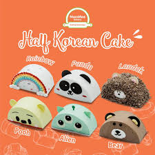
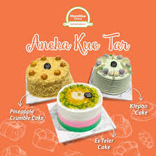
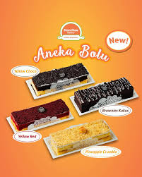
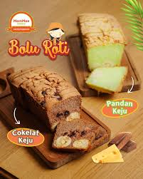

Welcome to MamMee Bakery!
We are delighted to have you here. At MamMee Bakery, we are passionate about creating delicious and delightful baked goods that bring joy to your taste buds. Our bakery is a haven for those who appreciate the art of baking and the pleasure of indulging in sweet treats.
Whether you're craving a classic chocolate chip cookie, a decadent slice of cake, or a freshly baked loaf of bread, we've got you covered. Our skilled bakers use only the finest ingredients to ensure that every bite is a moment of pure bliss.
We invite you to explore our menu and discover the wide variety of treats we offer. From traditional favorites to innovative creations, there's something for everyone at MamMe Bakery. Thank you for choosing us as your go-to destination for all things baked!
Most Popular
 |
 |
 |
 |
|---|---|---|---|
|
Dengan tampak yang lucu dan imut, kue-kue ini tidak hanya memanjakan mata tetapi juga lidah Anda. Dengan tekstur yang lembut dan rasa yang lezat, membuatnya menjadi pilihan sempurna untuk perayaan kecil untuk diri sendiri atau sebagai hadiah manis untuk orang terkasih. |
Kue ini memiliki bentuk yang unik dan menarik, dengan tekstur yang lembut dan rasa yang khas. Cocok untuk acara khusus atau sebagai hadiah manis untuk teman atau keluarga. |
Dengan penampilan yang elegan dan variasi rasa, bolu-bolu ini cocok untuk hari biasa maupun acara spesial. | Bosan dengan 1 rasa? Kue ini menawarkan kombinasi 2 rasa. Dimana satu sisi memiliki rasa roti biasa dengan pecahan keju, sementara sisi lainnya memiliki rasa coklat atau pandan. |